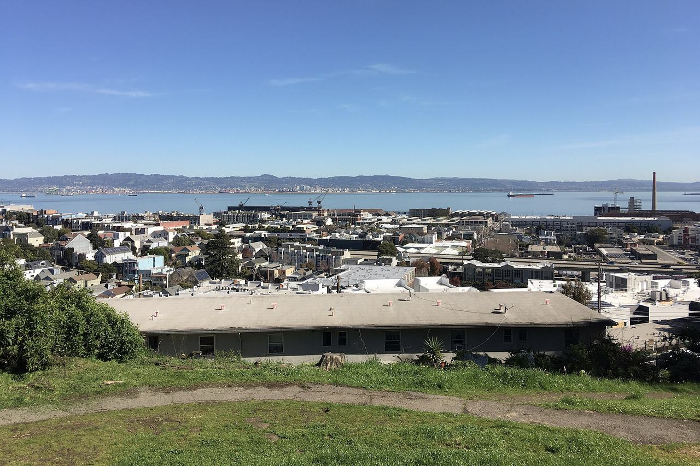

Dogpatch
The flat blocks east of Interstate 280 between Mariposa Street and Islais Creek, in the assessor's Central Waterfront/Dogpatch district and the city's Potrero Hill analysis neighborhood. Workers' cottages, flats and corner storefronts grew up here around the shipyards, iron works, sugar refinery and can plant of Potrero Point, and much of what survives is now the Dogpatch Article 10 historic district. Coverage begins with the addresses named in two surveys of 2001 — the Planning Department's Central Waterfront Cultural Resources Survey and Christopher VerPlanck's Dogpatch Historic District Survey.

Map
Named buildings and landmarks
-
1

-
2
-
3
-
4
-
5
-
6
Streets documented so far
- 18th Street
2 buildings, built 1900–2008; 1 in the Dogpatch Historic District. - 22nd Street
13 buildings, built 1900–1920; 13 in the Dogpatch Historic District. - 3rd Street
5 buildings, built 1900–1947; 3 in the Dogpatch Historic District. - Minnesota Street
9 buildings, built 1900–1907; 9 in the Dogpatch Historic District. - Tennessee Street
38 buildings, built 1890–1989; 38 in the Dogpatch Historic District.
Parks and public spaces
- Esprit Park
Neighborhood park or playground, 2.2 acres.
Historic districts here
Adjacent neighborhoods
Potrero Hill rises immediately west across Interstate 280; the two together make up the city's Potrero Hill analysis neighborhood. Mission Bay is north beyond Mariposa Street, and Bayview Hunters Point begins south across Islais Creek.